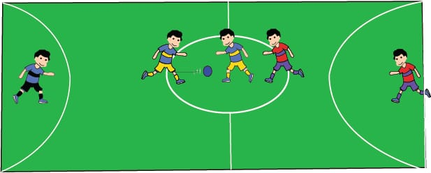
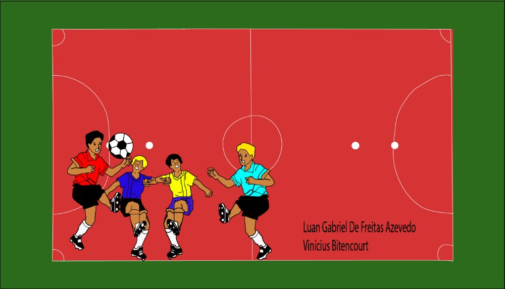
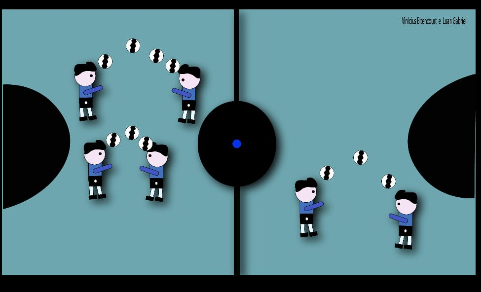

Um dos mais importantes e mais executados em uma partida de futsal. Consiste basicamente em passar a bola para outro jogador. Para realizá-lo é necessário ter visão de jogo para acompanhar os companheiros e precisão para acertar na direção e na força necessária para que seu passe não seja interceptado.

Passe no futsal
Tatica 3x2
O Sistema do Futsal 3×2 acontece quando o goleiro (Goleiro Linha) sai de sua área para participar das jogadas de ataque de sua equipe. Geralmente o goleiro é substituído por um jogador de linha que tenha como características um bom passe e um bom chute, para tornar esse sistema mais eficiente ofensivamente.
Sistema tatico 3x2
Marcação
A marcação individual no Futsal é o popular “cada um, marca um” ou “homem a homem”, ou seja, cada jogador será responsável por marcar um jogador adversário específico da equipe adversária, em qualquer lugar da quadra por onde ele se movimentar.

Marcação
Cabeceio
Cabeceio nada mais é do que golpear a bola com a cabeça. Ele deve ser executado preferencialmente com a testa (parte frontal da cabeça) e com os olhos abertos, para que o jogador possa determinar com maior precisão para onde a bola lançada.

Cabeceio
Tática 4x0
Sistema tático 4×0 do Futsal é usado por equipes de alto nível, como as equipes profissionais de Futsal. A ideia é ter todos os 4 jogadores se movendo de uma só vez, promovendo uma movimentação que permite muitas opções de tabelas, ocupação de espaço e oportunidades de ataque.
Tática 4x0
Oque é sistema tatico
Um sistema tático ou esquema tático é a forma que uma equipe de Futsal se posiciona em quadra, para atacar ou para defender.
Tática “é uma forma racional e planejada de aplicar um sistema e seus vários esquemas, a fim de combinar o jogo de ataque e defesa, tirando proveito de todas as circunstâncias favoráveis da partida, com o objetivo de dominar o adversário e conseguir a vitória
Tática 4x1
Drible
Denominamos drible como o recurso em que o jogador utiliza para, quando de posse de bola, ultrapassar o adversário sem perder o controle da mesma.
De acordo com Mutti, o ato de driblar é uma ação individual realizado com bola, que é o resultado de uma combinação de variáveis como equilíbrio, velocidade de arranque, agilidade, descontração muscular, ritmo entre outros, que tem por objetivo ultrapassar o adversário a sua frente.
Drible
Toque de bola
O toque é um modo específico de contato com a bola. Para realizar um toque, o jogador golpeia a bola com as pontas dos dedos, num movimento de baixo para cima. O toque é utilizado principalmente para a realização de um levantamento, embora também possa ser usado para a realização de uma recepção ou de uma defesa.